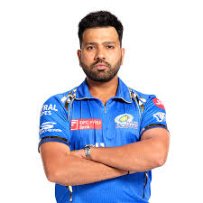
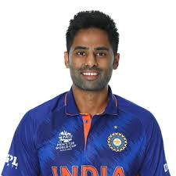

Virat Kohli

Virat Kohli (Hindi pronunciation: [ʋɪˈɾɑːʈ ˈkoːɦli] ⓘ; born 5 November 1988) is an Indian international
cricketer
who currently plays Test cricket and ODI cricket for India. Kohli is a former T20I player and a former
captain
of the Indian national cricket team. He is a right-handed batsman and an occasional unorthodox right arm
quick
bowler. He currently represents Royal Challengers Bengaluru in the IPL and Delhi in domestic cricket. He
holds
the record as the highest run-scorer in IPL, ranks third in T20I, third in ODI, and stands as the
fourth-highest
in international cricket.[4] He also holds the record for scoring the most centuries in ODI cricket and
stands
second in the list of most international centuries scored. Kohli is widely regarded as one of the greatest
batsmen of all time and the greatest batsman in the modern era.[citation needed] Kohli was a key member of
the
Indian team that won the 2011 Cricket World Cup, 2013 Champions Trophy and 2024 T20 World Cup and captained
India to win the ICC Test mace three consecutive times in 2017, 2018, and 2019.[5]
Read more
Rohit sharma

Rohit Gurunath Sharma (born 30 April 1987) is an Indian international cricketer who currently plays for and
captains the India national cricket team in Test and One Day International (ODI) matches. He formerly
captained
the team in Twenty20 International (T20I) matches until his retirement after India's win in 2024 ICC Men's
T20
World Cup.[4] The right-handed batsman, who is considered one of the best batsmen of his generation and one
of
the greatest opening batters of all time,[5] is known for his timing, elegance, six-hitting abilities and
leadership skill
Read more
suryakumar yadav

Suryakumar Ashok Yadav, (born 14 September 1990) also known by the initialism SKY, is an Indian international
cricketer. He is widely regarded as one of the greatest T20 batsmen of all time. He plays as a right-handed
middle-order batter and is an occasional right-arm off break bowler. He represents the Indian cricket team and
plays for Mumbai in domestic first-class cricket. Suryakumar was an integral member of the Indian team that won
the 2024 T20 World Cup. He plays for Mumbai Indians in the Indian Premier League (IPL).
Read More